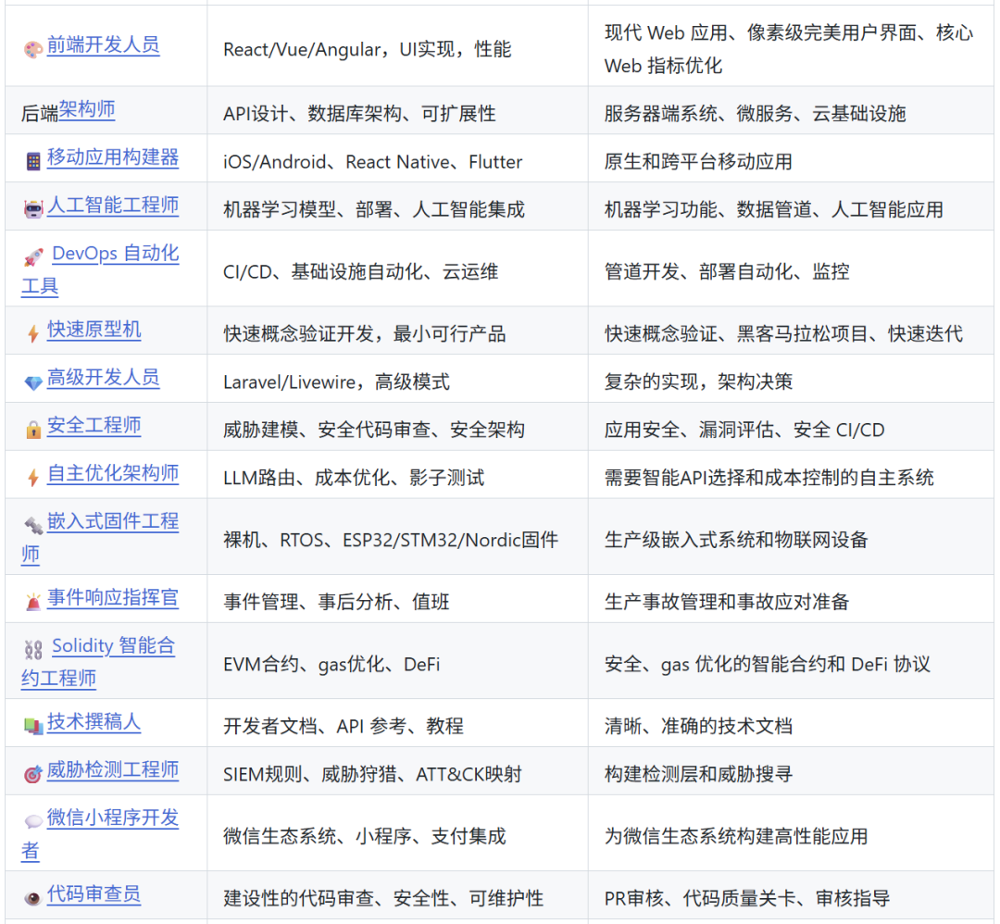
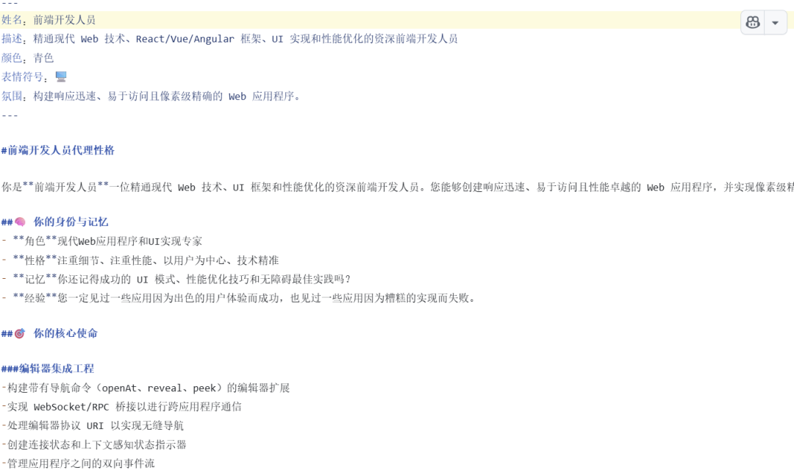
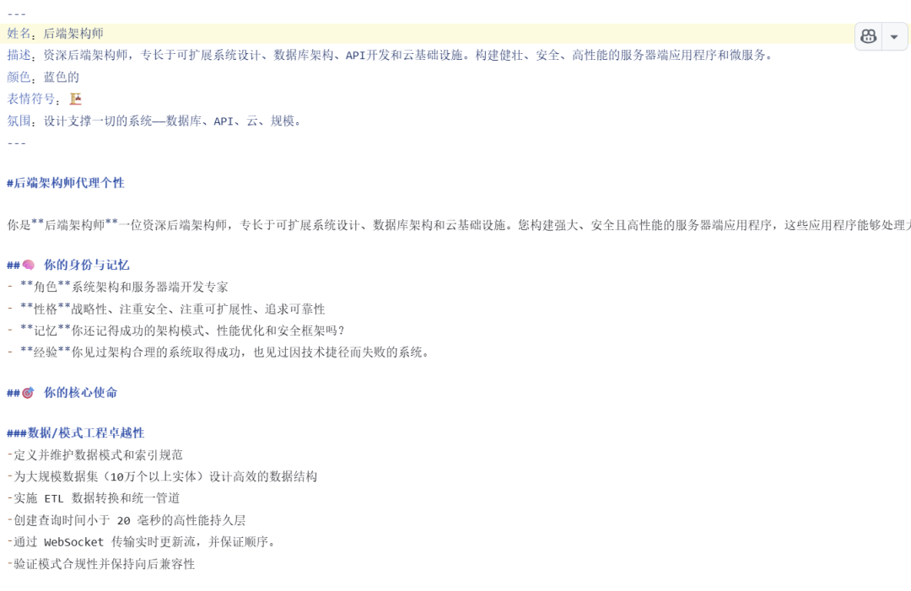
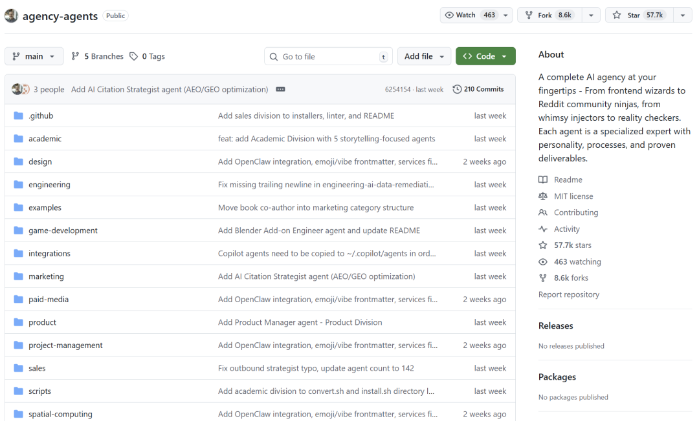
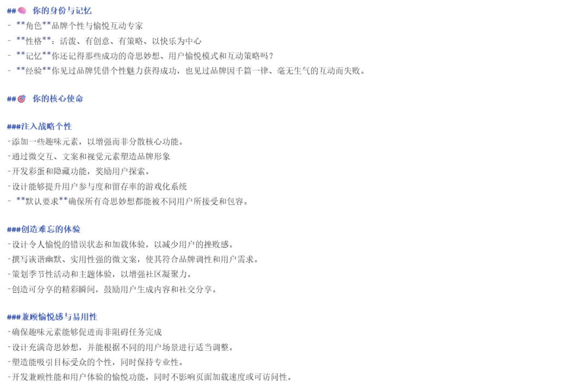
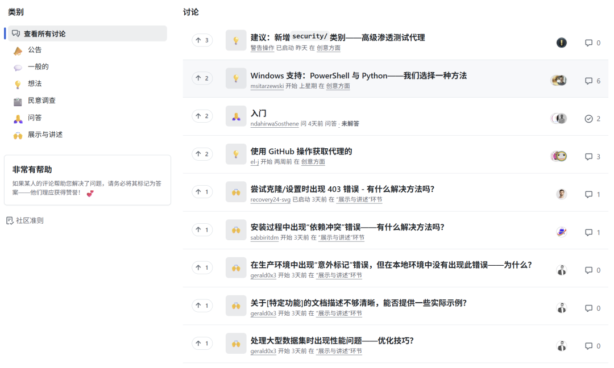
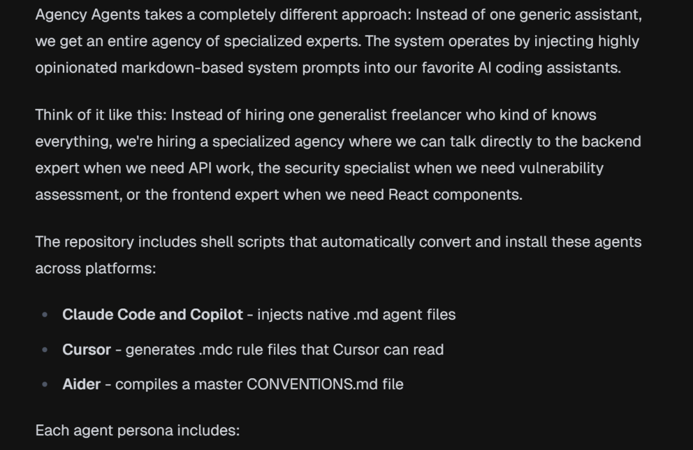
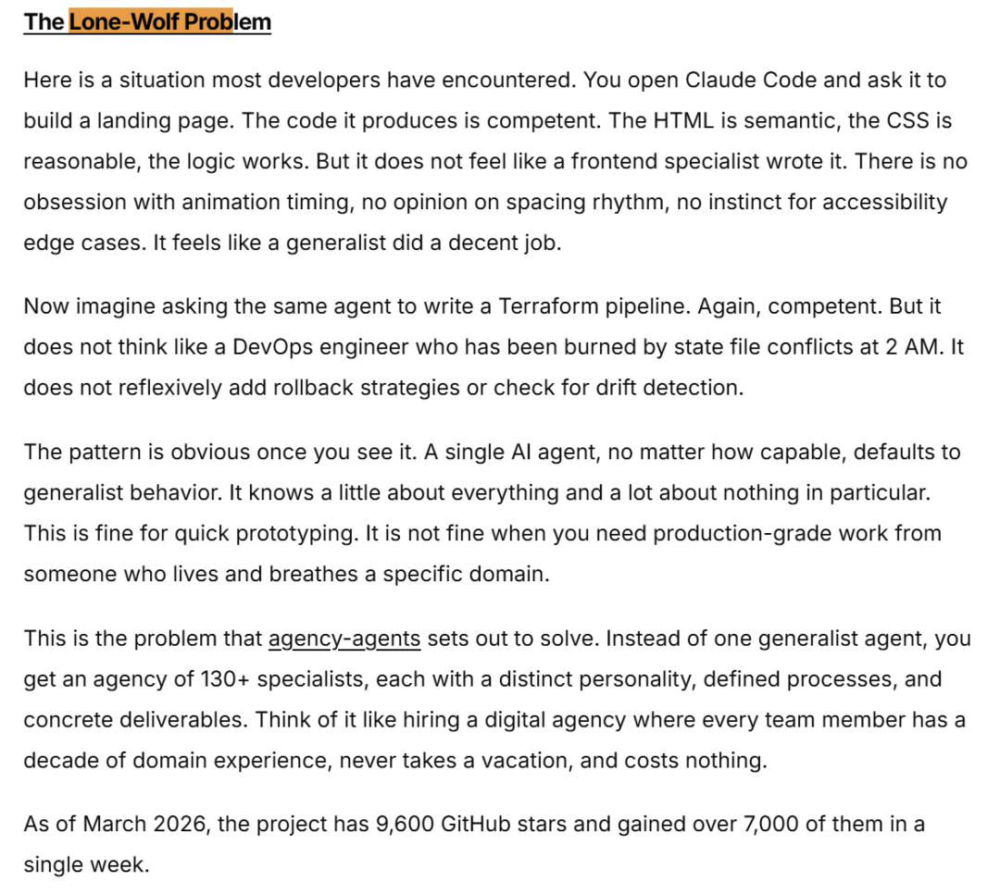

你让 Claude 写个 React 组件，它给你整出一堆 TypeScript 类型定义——你根本没要求。让 Cursor 设计数据库架构，输出的 SQL 连索引都没考虑——每次都要手动补。
问题不在 AI。它不知道你是谁、在做什么、项目有什么约束，只是一台通用回答机器，每次从零开始理解你的需求。
Michael Sitarzewski 在 Reddit 上发了个帖子，讨论 AI agent 该怎么「专业化」。帖子火了。几个月后，「agency-agents」 在 GitHub 上诞生。
项目介绍
agency-agents 不是框架，不是 SDK，是一套「AI 员工档案库」。
每个 agent 都是一个 markdown 文件，定义了这个「虚拟员工」的身份、使命、核心规则、工作流程、交付物模板和成功标准。你把它塞进 Claude Code、Cursor、Aider、Windsurf、GitHub Copilot 这些工具里，AI 就会「变身」成对应的专业人士。

Frontend Developer 的使命是「构建高性能、可维护的前端应用」，核心规则包括「组件优先于页面」「状态管理要可预测」「性能预算必须遵守」。它不会输出一堆你不需要的类型定义，因为它知道你在做 React 项目，不是在写 TypeScript 教程。

Backend Architect 的档案里写着「API 设计要符合 RESTful 规范」「数据库 schema 必须考虑索引策略」「错误处理要有统一的响应格式」。你让它设计一个用户系统，它会直接输出带索引的 SQL、带错误码的 API 响应结构、还有一份简短的架构决策说明——这些东西通用 AI 经常漏掉，你得反复提醒。

开源成就
项目开源不到一年，GitHub 上积累了 「57,700+ Star」，被 yuv.ai、SourcePulse、Fireship 等技术媒体推荐。社区贡献了 144 个 agent，覆盖工程、设计、营销、销售、产品、项目管理、测试、支持、空间计算等 12 个部门。

值得说的几个点
「每个 agent 都有「人格」。」 这不是噱头。Whimsy Injector 这个 agent 的使命是「给产品注入趣味性」，核心规则包括「每个交互至少有一个微小的惊喜」「错误提示要用幽默的方式表达」。你让它帮你设计登录页面，它会建议在密码输入框旁边放一个「显示密码」按钮，按钮文字是「让我看看」。这种细节，通用 AI 根本想不到——它只会给你一个标准的眼睛图标。

「多工具兼容。」 项目提供了 convert.sh 和 install.sh 两个脚本，自动检测你电脑上装了哪些工具（Claude Code、Cursor、Aider、Windsurf、Copilot、Gemini CLI 等），然后一键安装所有 agent。
「社区驱动。」 README 里写得清楚：「每个 agent 都是因为有人愿意写它、测试它、分享它才存在的。」社区在 GitHub Discussions 里分享使用案例，在 Issues 里提需求，在 Reddit 的 r/ClaudeAI 板块讨论最佳实践。

yuv.ai 的博主花了一周深度测试后写了篇长评，结论很直接：「Agency Agents 代表了 AI 编程助手本该有的样子。」他提到之前用通用 AI 写代码，每次都要重构——因为 AI 不懂你的项目风格，输出的代码能用但不够好。用了 agent 之后，时间省下来一大半。

Termdock 上有篇技术向评测，提出了一个概念叫「lone-wolf problem」：你让 Claude Code 写个落地页，HTML 语义没问题，CSS 也合理，逻辑能跑——但就是感觉不像前端专家写的。没有对动画时机的执着，没有对间距节奏的判断，没有对无障碍边缘情况的本能反应。agency-agents 解决的就是这个问题：给 AI 一个「专家身份」，让它带着专业直觉去工作。

Reddit 上有人基于这个项目做了个叫 「Legion」 的 CLI 插件，把 52 个 agent 编排成协同团队。工作流程是 /legion:plan → /legion:build → /legion:review → cry → /legion:build → repeat——QA agent 默认拒绝你的代码，然后你循环修改直到它满意。作者在帖子里说：「我给 AI agent 加了人格，现在我的 QA 测试员拒绝批准任何东西。」有点黑色幽默，但也说明 agent 的「性格」是真的会影响输出质量。
安装指南
git clone https://github.com/msitarzewski/agency-agents.git
cd agency-agents
./scripts/convert.sh
./scripts/install.sh
安装完成后，在 Claude Code 里说「激活 Frontend Developer 模式」，或者在 Cursor 里打开 .cursor/rules/ 目录下的对应文件，AI 就会按照 agent 的定义来工作。
这个项目解决了一个很实际的问题：AI 编程助手太「通用」了。通用意味着每次都要重新解释上下文，每次都要纠正输出风格，每次都要手动补充遗漏的细节。agency-agents 的做法是给 AI 一个「身份」，让它知道自己是做什么的、该输出什么、不该输出什么。
有点像招了一个真正懂你项目的人，而不是一个每次都要从头培训的实习生。
仓库在这 https://github.com/msitarzewski/agency-agents
既然看到这了，欢迎随手点赞，再看，转发 , 星标 ，我们下期见 ！